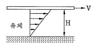
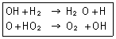
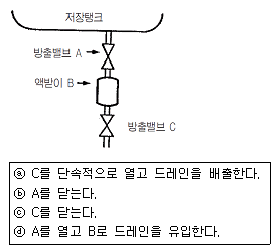
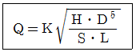

가스기사 (2013-03-10 기출문제)
1과목: 가스유체역학
1. 다음 중 비압축성 유체의 흐름에 가장 가까운 것은?
- 달리는 고속열차 주위의 기류
- 초음속으로 나는 비행기 주위의 기류
- 압축기에서의 공기 유동
- 물속을 주행하는 잠수함 주위의 수류
(정답률: 83%)

2. 비압축성 유체의 유량을 일정하게 하고, 관지름을 2배로 하면 유속은 어떻게 되는가? (단, 기타 손실은 무시한다.)
- 1/2로 느려진다
- 1/4로 느려진다
- 2배로 빨라진다.
- 4배로 빨라진다.
(정답률: 76%)
3. 어떤 유체 흐름계를 Buckingham pi 정리에 의하여 차원 해석을 하고자 한다. 계를 구성하는 변수가 7개이고, 기본차원이 3개일 때, 무차원군을 얻기 위해 3개의 핵심그룹(core group)을 사용한다면, 몇 개의 무차원군이 얻어지는가?
- 2
- 4
- 6
- 10
(정답률: 81%)
4. 터보팬의 송풍기전압이 350㎜Aq일 때 풍량이 6m3/min이다. 출구의 동압이 50㎜Aq이면 정압 공기동력은 몇 PS인가?
- 0.1
- 0.2
- 0.3
- 0.4
(정답률: 53%)
5. 관 내를 흐르고 있는 액체의 유속을 급격히 변화시키면 일어날 수 있는 현상은?
- 수격현상
- 서어징 현상
- 양정 증가
- 펌프 효율 증가
(정답률: 79%)
6. 원심식 압축기와 비교한 왕복식 압축기의 특징에 대한 설명으로 가장 거리가 먼 것은?
- 압력비가 낮다.
- 송출압력변화에 따라 풍량의 변화가 적다.
- 회전속도가 늦다.
- 송출량이 맥동적이므로 공기탱크를 필요로 한다.
(정답률: 61%)
7. 원관 내 유체의 흐름에 대한 설명 중 틀린 것은?
- 일반적으로 층류는 레이놀즈수가 약 2100 이하인 흐름이다.
- 일반적으로 난류는 레이놀즈수가 약 4000 이상인 흐름이다.
- 일반적으로 관 중심부의 유속은 평균유속보다 빠르다.
- 일반적으로 최대속도에 대한 평균속도의 비는 난류가 층류보다 작다.
(정답률: 79%)
8. 두 개의 무한히 큰 수평 평판 사이에 유체가 채워져 있다. 아래 평판을 고정하고 윗 평판을 V의 일정한 속도로 움직일 때 평판에는 τ의 전단응력이 발생한다. 평판 사이의 간격은 H이고, 평판사이의 속도분포는 선형(Couette 유동)이라고 가정하여 유체의 점성계수 μ를 구하면?

- τV/H
- τH/V
- VH/τ
- τV/H2
(정답률: 67%)
9. 어떤 유체의 액면아래 10m인 지점에 있는 물고기가 액체에 의해 받는 계기압력이 2.16kgf/cm2일 때 이 액체의 비중량은 몇 kgf/m3인가?
- 2160
- 216
- 21.6
- 0.216
(정답률: 67%)
10. 물방울에 작용하는 표면장력의 크기는? (단, P1은 내부압력, P0는 외부압력, r은 반지름이다.)
- (P1-P0)×r
- (P1-P0)×2r
- {(P1-P0)×r}÷2
- {(P1-P0)×r}÷4
(정답률: 66%)
11. 압축성 유체흐름에 대한 설명으로 가장 거리가 먼 것은?
- Mach 수는 유체의 속도와 음속의 비로 정의된다.
- 단면이 일정한 도관에서 단열마찰흐름은 가역적이다.
- 단면이 일정한 도관에서 등온마찰흐름은 비단열적이다.
- 초음속 유동일 때 확대 도관에서 속도는 점점 증가한다.
(정답률: 54%)
12. 점도의 SI 단위인 Pa·s와 관습적 단위인 P(poise)의 관계로 옳은 것은?
- 1Pa·s＝0.11P
- 1Pa·s＝1P
- 1Pa·s＝10P
- 1Pa·s＝100P
(정답률: 66%)
13. 높이 30m에서 압력이 20kgf/cm2이고, 속도가 9m/s일 때 물의 총수두는 얼마인가?
- 234m
- 334m
- 434m
- 534m
(정답률: 48%)
14. 중력 단위계에서 1kgf와 같은 것은?
- 980kg·m/s2
- 980kg·m2/s2
- 9.8kg·m/s2
- 9.8kg·m2/s2
(정답률: 81%)
15. 다음 중 기체수송에 사용되는 기계로 가장 거리가 먼 것은?
- 팬
- 송풍기
- 압축기
- 펌프
(정답률: 75%)
16. 정적 비열의 정의는?
- kCp
- (αh/αT)v
- (αT/αu)v
- (αu/αT)v
(정답률: 63%)
17. 온도가 일정할 때 압력이 10kgf/cm2 abs인 이상기체의 압축율은 몇 cm2/kgf인가?
- 0.1
- 0.5
- 1
- 5
(정답률: 62%)
18. Hagen-Poiseuille식이 적용되는 관내 층류 유동에서 최대속도 Vmax＝6㎝/s일 때 평균속도 Vavg는 몇 ㎝/s인가?
- 2
- 3
- 4
- 5
(정답률: 77%)
19. 중량 10000kgf의 비행기가 270km/h의 속도로 수평 비행할 때 동력은? (단, 양력(L)과 항력(D)의 비 L/D＝5이다.)
- 1400PS
- 2000PS
- 2600PS
- 3000PS
(정답률: 62%)
20. 지름 200㎜, 길이 1000m의 주철관을 이용하여 손실수두 10m로 수송할 때 유속은 몇 m/s인가? (단, 마찰계수는 0.025이다.)
- 1.25m/s
- 2.5m/s
- 12.5m/s
- 25.0m/s
(정답률: 60%)
2과목: 연소공학
21. 일반적으로 고체입자를 포함하지 않은 화염을 불휘염, 고체입자를 포함하는 화염은 휘염이라 불리 운다. 이들 휘염과 불휘염은 특유의 색을 가지는데 색과 화염의 종류가 옳게 짝지어진 것은?
- 불휘염-청녹색, 휘염-백색
- 불휘염-청녹색, 휘염-황색
- 불휘염-적색, 휘염-황적색
- 불휘염-적색, 휘염-백색
(정답률: 67%)
22. 자연 상태의 물질을 어떤 과정(Process)을 통해 화학적으로 변형시킨 상태의 연료를 2차 연료라고 한다. 다음 중 2차 연료에 해당하는 것은?
- 석탄
- 원유
- 천연가스
- LPG
(정답률: 84%)
23. 열화학반응 시 온도변화의 열전도 범위에 비해 속도변화의 전도 범위가 크다는 것을 나타내는 무차원수는?
- 루이스 수(Lewis number)
- 러셀 수(Nesselt number)
- 프란틀 수(Prandtl number)
- 그라쇼프 수(Grashof number)
(정답률: 82%)
24. 이상기체의 식 PVn＝C(상수)에서 n＝1이면 무슨 변화인가?
- 등압변화
- 단열변화
- 등적변화
- 등온변화
(정답률: 65%)
25. 에탄 5Nm3을 완전연소시킬 때 필요한 이론공기량 중 N2의 양은 약 몇 Nm3인가?
- 46
- 66
- 83
- 103
(정답률: 56%)
26. 소화약제로서 물이 가지는 성질에 대한 설명으로 옳지 않은 것은?
- 기화잠열이 적다.
- 비열이 크다.
- 극성공유결합을 하고 있다.
- 가장 주된 소화효과는 냉각소화이다.
(정답률: 78%)
27. 다음 2종류의 가스가 혼합 적재되어 있을 경우 폭발위험성이 가장 큰 것은?
- 암모니아, 네온
- 질소, 프로판
- 염소, 아르곤
- 염소, 아세틸렌
(정답률: 85%)
28. 다음 중 폭발방호(Explosion Protection)의 대책이 아닌 것은?
- Venting
- Suppression
- Containment
- Adiabatic Compression
(정답률: 78%)
29. 어떤 액체 연료를 분석하였더니 탄소 65w%, 수소 25w%, 산소 8w%, 황 2w%가 함유되어 있음을 알았다. 이 연료의 완전연소에 필요한 이론공기량은 약 몇 kg/kg연료인가?
- 9.4
- 11.5
- 13.7
- 15.8
(정답률: 36%)
30. 최소산소농도(MOC)와 이너팅(Inerting)에 대한 설명으로 틀린 것은?
- LFL(연소하한계)은 공기 중의 산소량을 기준으로 한다.
- 화염을 전파하기 위해서는 최소한의 산소농도가 요구된다.
- 폭발 및 화재는 연료의 농도에 관계없이 산소의 농도를 감소시키므로서 방지할 수 있다.
- MOC값은 언소반응식 중 산소의 양론계수와 LFL(연소하한계)의 곱을 이용하여 추산할 수 있다.
(정답률: 71%)
31. 어떤 연도가스의 조성을 분석하였더니 CO2 : 11.9%, CO : 1.6%, O2 : 4.1%, N2 : 82.4%이었다. 이때 과잉공기의 백분율은 얼마인가? (단, 공기 중 질소와 산소의 부피비는 79 : 21이다.)
- 17.7%
- 21.9%
- 33.5%
- 46.0%
(정답률: 52%)
32. 다음 중 폭발 시 화염중심으로부터 압력이 전파되는 반경거리(R)를 구하는 식은? (단, W : TNT당량, k : 반경거리 R에서 압력을 나타내는 상수이다.)
- R＝kW1/2
- R＝kW1/3
- R＝kW1/4
- R＝kW1/5
(정답률: 60%)
33. 메탄가스를 과잉공기를 이용하여 완전연소시켰다. 생성된 H2O는 흡수탑에서 흡수, 제거시키고 나온 가스를 분석하였더니 그 조성은 CO2 9.6v%, O2 3.8v%, N2 86.6v% 이었다. 이때 과잉 공기량은 약 몇 %인가?
- 10%
- 20%
- 30%
- 40%
(정답률: 56%)
34. 다음 중 열역학 제2법칙에 대한 설명이 아닌 것은?
- 자발적인 과정이 일어날 때는 전체(계와 주위)의 엔트로피는 감소하지 않는다.
- 계의 엔트로피는 증가할 수도 있고 감소할 수도 있다.
- 계의 엔트로피는 계가 열을 흡수하거나 방출해야만 변화한다.
- 엔트로피는 열의 흐름을 수반한다.
(정답률: 58%)
35. 최소 점화에너지에 대한 다음 설명 중 옳은 것은?
- 최소 점화에너지는 유속이 증가할수록 작아진다.
- 최소 점화에너지는 혼합기 온도가 상승함에 따라 작아진다.
- 최소 점화에너지의 상승은 혼합기 온도 및 유속과는 무관하다.
- 최소 점화에너지는 유속 20m/s까지는 점화에너지가 증가하지 않는다.
(정답률: 64%)
36. 다음 중 공기와 혼합기체를 만들었을 때 최대연소속도가 가장 빠른 기체연료는?
- 아세틸렌
- 메틸알콜
- 톨루엔
- 등유
(정답률: 77%)
37. 다음 중 이론 연소가스량을 올바르게 설명한 것은?
- 단위량의 연료를 포함한 이론 혼합기가 완전 반응을 하였을 때 발생하는 산소량
- 단위량의 연료를 포함한 이론 혼합기가 불완전 반응을 하였을 때 발생하는 산소량
- 단위량의 연료를 포함한 이론 혼합기가 완전 반응을 하였을 때 발생하는 연소 가스량
- 단위량의 연료를 포함한 이론 혼합기가 불완전 반응을 하였을 때 발생하는 연소 가스량
(정답률: 73%)
38. 표준 상태에서 고발열량과 저발열량 사이의 차는 얼마인가?
- 9700cal/g-mol
- 539cal/g-mol
- 80cal/g
- 619cal/g
(정답률: 62%)
39. 이상기체에 대한 상호 관계식을 나타낸 것 중 옳지 않은 것은? (단, U는 내부에너지, Q는 열, W는 일, T는 온도, Ρ는 압력, V는 부피, k는 비열비, Cv는 정적비열, Cp는 정압비열, R은 기체상수이다.)
- 등적과정 : dU＝dQ＝Cv·dT
- 등온과정 : Q＝W＝RT ln(P1/P2)
- 단열과정 : T2/T1＝(V2/V1)K
- 등압과정 : Cp·dT＝Cv·dT＋R·dT
(정답률: 69%)
40. 기체의 연소반응 중 다음 [보기]의 과정에 해당하는 것은?

- 개시(initiation) 반응
- 전화(propagation) 반응
- 가지(branching) 반응
- 종말(termination) 반응
(정답률: 72%)
3과목: 가스설비
41. 가스화의 용이함을 나타내는 지수로서 C/H 비가 이용된다. 다음 중 C/H 비가 가장 낮은 것은?
- Propane
- Naphtha
- Methane
- LPG
(정답률: 67%)
42. 다음 그림에 표시한 LP가스 저장탱크의 드레인밸브(drain valve)의 조작 순서를 바르게 나열한 것은? (단, A와 C밸브는 조작 전에 닫혀 있다.)

- ⓐ → ⓓ → ⓒ → ⓑ
- ⓓ → ⓐ → ⓒ → ⓑ
- ⓓ → ⓐ → ⓑ → ⓒ
- ⓓ → ⓑ → ⓐ → ⓒ
(정답률: 67%)
43. 가스계랑기의 최대유량이 16m3/h인 경우 가스계량기 검정 유효기간으로 맞는 것은?
- 5년
- 8년
- 10년
- 15년
(정답률: 52%)
44. 관경 1B, 길이 30m의 LP가스 저압 배관에 가스 상태의 프로판이 5m3/h로 흐를 경우 압력손실은 수주 14mm이다. 이 배관에 가스 상태의 부탄을 6m3/h로 흐르게 할 경우 수주는 약 몇 mm가 되는가? (단, 프로판, 부탄의 가스 비중은 각각 1.5 및 2.0이다.)

- 17
- 20
- 27
- 30
(정답률: 52%)
45. LPG(액체) 1kg이 기화했을 때 표준상태에서의 체적은 약 몇 L가 되는가? (단, LPG의 조성은 프로판 80wt％, 부탄 20wt%이다.)
- 387
- 485
- 584
- 783
(정답률: 49%)
46. 다음 중 양정이 높을 때 사용하기에 가장 적당한 펌프는?
- 1단펌프
- 다단펌프
- 단흡입 펌프
- 양흡입 펌프
(정답률: 75%)
47. 가스사용시설에는 연소기 각각에 대하여 설치하는 중간밸브로 퓨즈콕 또는 이와 동등 이상의 성능을 가진 안전장치를 설치해야 하는 조건에 해당하는 것은?
- 소비량 16200kcal/h 이하, 사용압력 2.5kPa 이하
- 소비량 16200kcal/h 이하, 사용압력 3.3kPa 이하
- 소비량 19400kcal/h 초과, 사용압력 2.5kPa 초과
- 소비량 19400kcal/h 초과, 사용압력 3.3kPa 초과
(정답률: 51%)
48. 공기액화분리장치의 폭발 방지대책으로 옳지 않은 것은?
- 장치 내에 여과기를 설치한다.
- 유분리기는 설치해서는 안 된다.
- 흡입구 부근에서 아세틸렌 용접은 하지 않는다.
- 압축기의 윤활유는 양질유를 사용한다.
(정답률: 66%)
49. 고압가스 제조시설에 설치하는 내부반응 감시장치에 속하지 않는 것은?
- 온도감시장치
- 압력감시장치
- 유량감시장치
- 기화감시장치
(정답률: 63%)
50. 클라우드식 공기액화사이클의 주요 구성요소가 아닌 것은?
- 열교환기
- 축냉기
- 액화기
- 팽창기
(정답률: 49%)
51. 고압으로 수송하기 위해 압송기가 필요한 프로세스는?
- 사이클링식 접촉분해 프로세스
- 수소화분해 프로세스
- 대체천연가스 프로세스
- 저온 수증기개질 프로세스
(정답률: 63%)
52. 자동절체식 일체형 저압 조정기의 조정압력은?
- 2.30 ~ 3.30kPa
- 2.50 ~ 3.03kPa
- 2.55 ~ 3.30kPa
- 5.00 ~ 30.00kPa
(정답률: 66%)
53. 다음 중 고정 설치형 가스난방기에 반드시 설치하여야 하는 안전장치가 아닌 것은?
- 불완전연소방지장치
- 산소결핍안전장치
- 전도안전장치
- 소화안전장치
(정답률: 70%)
54. 다음 배관 중 반드시 역류방지 밸브를 설치할 필요가 없는 곳은?
- 가연성 가스를 압축하는 압축기와 오토클레이브와의 사이
- 가연성 가스를 압축하는 압축기와 충전용 주관과의 사이
- 아세틸렌을 압축하는 압축기의 유분리기와 고압건조기와의 사이
- 암모니아의 합성탑과 압축기 사이
(정답률: 62%)
55. 압력계에 눈금을 표시하기 위하여 자유피스톤형 압력계를 설치하였다. 이때 표시압력(Ρ)를 구하는 식으로 옳은 것은? (단, A1＝피스톤의 단면적, A2＝추의 단면적, W1＝추의 무게, W2＝피스톤의 무게, ΡA＝대기압이고 마찰 및 피스톤의 변경오차는 무시된다.)
- P＝A1/(W1＋W2)＋ΡA
- P＝(W1＋W2)/A1＋ΡA
- P＝A1/(W1＋W2)-ΡA
- P＝(W1＋W2)/A1-ΡA
(정답률: 53%)
56. 공기액화분리장치에서 이산화탄소 1kg을 제거하기 위해 필요한 NaOH는 약 몇 kg인가? (단, 반응률은 60%이고, NaOH의 분자량은 40이다.)
- 0.9
- 1.8
- 2.3
- 3.0
(정답률: 30%)
57. 펌프의 이상현상에 대한 설명 중 틀린 것은?
- 수격작용이란 유속이 급변하여 심한 압력변화를 갖게 되는 작용이다.
- 서징(surging)의 방지법으로 유량조정밸브를 펌프 송출측 직후에 배치시킨다.
- 캐비테이션 방지법으로 관경과 유속을 모두 크게 한다.
- 베이퍼록은 저비점 액체를 이송시킬 때 입구 쪽에서 발생되는 액체비등 현상이다.
(정답률: 74%)
58. 회전펌프의 특징에 대한 설명으로 옳지 않은 것은?
- 회전운동을 하는 회전체와 케이싱으로 구성된다.
- 점성이 큰 액체의 이송에 적합하다.
- 토출액의 맥동이 다른 펌프보다 크다.
- 고압유체 펌프로 널리 사용된다.
(정답률: 57%)
59. 고압가스 종류 및 범위에 해당하지 않는 것은? (단, 압력은 게이지 압력을 말한다.)
- 섭씨 35도의 온도에서 압력이 OPa을 초과하는 액화가스 중 액화시안화수소
- 상용의 온도에서 압력이 O.1MPa 이상이 되는 액화가스
- 섭씨 15도의 온도에서 압력이 OPa을 초과하는 아세틸렌가스
- 상용의 온도에서 압력이 1MPa 이상이 되는 압축가스
(정답률: 53%)
60. 다음 중 특정고압가스에 해당하지 않는 것은?
- 사불화규소
- 삼불화질소
- 오불화황
- 포스핀
(정답률: 50%)
4과목: 가스안전관리
61. 저장탱크 상호 간에 유지하여야 하는 최소한의 거리는?
- 60㎝
- 1m
- 2m
- 3m
(정답률: 69%)
62. 고압가스를 충전한 용기를 용기 보관장소에 보관하는 기준으로 옳지 않은 것은?
- 충전용기와 잔가스 용기는 구분하여 보관한다.
- 충전용기 보관 중에는 항상 40℃ 이하로 유지한다.
- 가연성가스용기와 산소용기를 함께 보관해도 상관없다.
- 용기 보관장소에는 계량기 등 작업에 필요한 물건 외에는 두지 않는다.
(정답률: 76%)
63. 긴급이송설비에 부속된 처리설비는 이송되는 설비 내의 내용물을 안전하게 처리하여야 한다. 처리방법으로 틀린 것은?
- 플레어스택에서 안전하게 연소시킨다.
- 안전한 장소에 설치되어 저장탱크 등에 임시 이송할 수 있어야 한다.
- 밴트스택에서 안전하게 연소시켜야 한다.
- 독성가스는 제독 후 안전하게 폐기시킨다.
(정답률: 61%)
64. 도시가스 지하 매설배관 설치 시 폭 8m 도로의 지하에 배관을 매설하는 경우 깊이는 지면으로부터 얼마인가?
- 0.6m 이상
- 0.8m 이상
- 1.0m 이상
- 1.2m 이상
(정답률: 70%)
65. 수소의 성질 중 화재 등의 재해발생 원인이 아닌 것은?
- 공기와 혼합될 경우 폭발범위가 4~75%이다.
- 고온, 고압에서 강에 대하여 탈탄작용을 일으킨다.
- 아주 좁은 간격으로부터 확산하기 쉽다.
- 열전도율이 아주 적고 열에 대하여 불안정하다.
(정답률: 70%)
66. 다음 각 독성가스별 보유하여야 하는 제독제가 옳지 않게 짝지어진 것은?
- 시안화수소 - 가성소다 수용액
- 염소 - 탄산소다 수용액
- 아황산가스 - 물
- 황화수소 - 황산 수용액
(정답률: 60%)
67. 지하에 설치하는 지역정압기에는 시설의 조작을 안전하고 확실하게 하기 위하여 안전조작에 필요한 장소의 조도는 몇 룩스 이상이 되도록 설치하여야 하는가?
- 100룩스
- 150룩스
- 200룩스
- 250룩스
(정답률: 71%)
68. 액화석유가스를 용기 저장탱크 또는 제조설비에 이·충전 시 정전기제거 조치에 관한 내용 중 틀린 것은?
- 접지저항 총합이 100Ω 이하의 것은 정전기제거 조치를 하지 않아도 된다.
- 피뢰설비가 설치된 것의 접지 저항값이 50Ω 이하의 것은 정전기 제거조치를 하지 않아도 된다.
- 접지접속선 단면적은 5.5mm2 이상의 것을 사용해야 한다.
- 탱크로리 및 충전에 사용하는 배관은 반드시 충전 전에 접지해야 한다.
(정답률: 63%)
69. 고압가스의 운반에 대한 설명으로 옳은 것은?
- 염소와 아세틸렌은 동일 차량에 적재하여 운반할 수 있다.
- 염소와 암모니아는 동일 차량에 적재하여 운반할 수 있다.
- 염소와 수소는 동일 차량에 적재하여 운반할 수 없다.
- 염소와 질소는 동일 차량에 적재하여 운반할 수 없다.
(정답률: 64%)
70. 보일러의 파일릿(pilot)버너 또는 메인(main)버너의 불꽃이 접촉할 수 있는 부분에 부착하여 불이 꺼졌을 때 가스가 누출되는 것을 방지하는 안전장치의 방식이 아닌 것은?
- 바이메탈(bimetal)식
- 열전대(thermocouple)식
- 플레임로드(flame rod)식
- 퓨즈메탈(fuse metal)식
(정답률: 61%)
71. 내용적이 58L의 LPG용기에 프로판을 충전할 때 최대 충전량은 약 몇 kg으로 하면 되는가? (단, 프로판의 정수는 2.35이다.)
- 20kg
- 25kg
- 30kg
- 35kg
(정답률: 69%)
72. 지상에 설치하는 액화석유가스의 저장탱크 안전밸브에 가스방출관을 설치하고자 한다. 저장탱크의 정상부가 지상에서 8m일 경우 방출관의 높이는 지상에서 몇 m 이상이어야 하는가?
- 8
- 10
- 12
- 14
(정답률: 60%)
73. LPG 판매시설에서의 시설기준에 대한 설명으로 틀린 것은?
- 사업소의 부지는 그 한면의 폭이 5m 이상의 도로에 접하여야 한다.
- 용기보관실은 그 외면으로부터 화기를 취급하는 장소까지 2m 이상의 우회거리를 두어야 한다.
- 누출된 가연성가스가 화기를 취급하는 장소로 유동하는 것을 방지하기 위한 시설은 높이 2m 이상의 내화성벽으로 한다.
- 화기를 사용하는 장소가 불연성 건축물 안에 있는 경우 저장설비로부터 수평거리 2m 이내로 있는 그 건축물의 개구부는 방화문으로 한다.
(정답률: 46%)
74. 냉동기제조시설에서 압력용기의 용접부 전길이에 대하여 방사선 투과시험을 실시하여야 하는 것은?
- 두께 38mm 이상의 탄소강을 사용한 동판용접부
- 두께 15mm 이상의 저합금강을 사용한 경판용접부
- 두께 20mm 이상의 저합금강을 사용한 동판용접부
- 두께 15mm 이상의 고장력강을 모재로 하는 용접부
(정답률: 58%)
75. 이동식 부탄연소기용 접합용기에 대한 설계단계검사 항목이 아닌 것은?
- 진동검사
- 기밀검사
- 단열성능시험
- 고압가압검사
(정답률: 46%)
76. LPG 저장탱크(48m3의 내용적)에 부탄 18톤을 충전한다면 저장탱크 내의 액상인 부탄 용적은 상용 온도에서 저장 탱크 내용적의 약 몇 %가 되겠는가? (단, 상용온도에서 부탄의 액비중은 0.55로 한다.)
- 90%
- 86%
- 77%
- 68%
(정답률: 43%)
77. 도시가스시설의 완성검사 대상에 해당하지 않는 것은?
- 가스사용량의 증가로 특정가스사용시설로 전환되는 가스사용시설 변경공사
- 특정가스사용시설로 호칭지름 50㎜의 강관을 25m 교체하는 변경공사
- 특정가스사용시설의 압력조정기를 증설하는 변경공사
- 배관변경을 수반하지 않고 월사용예정랑 550m3를 증설하는 변경공사
(정답률: 64%)
78. 고압가스 충전용기를 운반할 때의 기준으로 옳지 않은 것은?
- 충전용기와 등유는 동일 차량에 적재하여 운반하지 않는다.
- 충전량이 30kg 이하이고, 용기 수가 2개를 초과하지 않는 경우에는 오토바이에 적재하여 운반할 수 있다.
- 충전용기 운반차량은 “위험고압가스”라는 경계표시를 하여야 한다.
- 밸브가 돌출한 충전용기는 밸브의 손상을 방지하는 조치를 하여야 한다.
(정답률: 74%)
79. 고압가스안전관리법의 적용을 받는 고압가스는?
- 철도차량의 에어콘디셔너 안의 고압가스
- 오토크레이브 안의 염화비닐
- 등화용의 아세틸렌가스
- 발포성주류에 혼합된 고압가스
(정답률: 54%)
80. 다음 가스가 공기 중에 누출되고 있다고 할 경우 가장 빨리 폭발할 수 있는 가스는? (단, 점화원 및 주위환경 등 모든 조건은 동일하다고 가정한다.)
- H2
- CH4
- C3H8
- C4H10
(정답률: 51%)
5과목: 가스계측기기
81. 속도분포식 U＝4y2/3일 때 경계면에서 0.3m 지점의 속도 구배(S-l)는? (단, U와 y의 단위는 각각 m/s, m이다.)
- 2.21
- 2.76
- 3.38
- 3.98
(정답률: 40%)
82. 피스톤형 압력계 중 분동식 압력계에 사용되는 다음 액체 중 3,000kg/cm2 이상의 고압측정에 사용되는 것은?
- 모빌유
- 스핀들유
- 피마자유
- 경유
(정답률: 67%)
83. 일차지연요소가 적용되는 계에서 시정수(τ)가 10분일 때 10분 후의 스텝(step)응답은 최대 출력의 몇 %인가?
- 33%
- 50%
- 63%
- 67%
(정답률: 45%)
84. 가스크로마토그래피의 검출기 중 선형 감응 범위가 크고 유기 및 무기화학종 모두에 감응하고, 검출 후에도 용질이 파괴되지 않으나, 감도가 비교적 낮은 것은?
- 불꽃이온화 검출기(FID)
- 전자포획 검출기(ECO)
- 열전도도 검출기(TCD)
- 불꽃광도법 검출기(FTD)
(정답률: 53%)
85. 루트(Roots)가스미터의 특징에 해당되지 않는 것은?
- 여과기 설치가 필요하다.
- 설치면적이 크다.
- 대유량 가스측정에 적합하다.
- 중압가스의 계량이 가능하다.
(정답률: 63%)
86. 다음 중 측온 저항체의 종류가 아닌 것은?
- Hg
- Ni
- Cu
- Pt
(정답률: 65%)
87. 루트가스미터의 고장 중 불통(가스가 미터를 통과할 수 없는 고장)의 원인을 가장 바르게 설명한 것은?
- 계량막의 파손, 밸브의 탈락, 밸브와 밸브시트의 간격에서의 누출
- Magnet coupling 장치의 slip, 감속 또는 지시장치의 기어물림 불량
- 회전자 베어링의 마모에 의한 회전자의 접촉, 설치공사 불량에 의한 먼지
- 감속 또는 지시장치의 기어 물림 불량
(정답률: 50%)
88. 계측기기의 감도에 대한 설명 중 옳지 않은 것은?
- 계측기가 측정량의 변화에 민감한 정도를 말한다.
- 지시계의 확대율이 커지면 감도는 낮아진다.
- 감도가 나쁘면 정밀도도 나빠진다.
- 측정량의 변화에 대한 지시량의 변화의 비로 나타낸다.
(정답률: 50%)
89. 가스미터에 대한 다음 설명 중 틀린 것은?
- 습식가스미터는 가스량의 측정이 정확하다.
- 다이어프램식 가스미터는 일반 가정용 가스량 측정에 적당하다.
- 루트미터는 회전자식으로 고속회전이 가능하다.
- 오리피스미터는 압력손실이 없어 가스량 측정이 정확하다.
(정답률: 63%)
90. 게겔법에 의한 가스 분석에서 가스와 그 흡수제가 바르게 짝지어진 것은?
- CO2 - 발연황산
- C2H2 - 33% KOH 용액
- CO - 암모니아성 염화 제1구리 용액
- O2 - 취수소
(정답률: 75%)
91. 고온, 고압의 액체나 고점도의 부식성액체 저장탱크에 가장 적합한 간접식 액면계는?
- 유리관식
- 방사선식
- 플로트식
- 검척식
(정답률: 61%)
92. 다음 중 액주형 압력계에 해당하지 않는 것은?
- U자관 압력계
- 링밸런스 압력계
- 경사관 압력계
- 부르동관 압력계
(정답률: 60%)
93. 초산납 10g을 물 90mL로 용해하여 만드는 시험지와 그 검지가스가 바르게 연결된 것은?
- 염화파라듐지- H2S
- 염화파라듐지 - CO
- 연당지 - H2S
- 연당지 - CO
(정답률: 71%)
94. 다음 중 편위법에 의한 계측기기가 아닌 것은?
- 스프링 저울
- 부르동관 압력계
- 전류계
- 화학천칭
(정답률: 65%)
95. 회전 드럼이 4실로 나누어진 습식가스미터에서 각 실의 체적이 2L이다. 드럼이 12회전하였다면 가스의 유량은 몇 L인가?
- 12L
- 24L
- 48L
- 96L
(정답률: 60%)
96. 가스미터의 필요 요건으로 틀린 것은?
- 부착이 간단하며 유지관리가 용이할 것
- 정확하게 계량될 것
- 감도는 적으나 정밀성이 있을 것
- 내열성이 좋고 가스의 기밀성이 양호할 것
(정답률: 75%)
97. 열기전력이 작으며, 산화분위기에 강하나 환원분위기에는 약하고, 고온 측정에는 적당한 열전대온도계의 단자 구성으로 옳은 것은?
- 양극 : 철, 음극 : 콘스탄탄
- 양극 : 구리, 음극 : 콘스탄탄
- 양극 : 크로멜, 음극 : 알루멜
- 양극 : 백금-로듐, 음극 : 백금
(정답률: 69%)
98. 다음 중 잔류편차(offset)는 없앨 수 있으나 제어 시간이 단축되지 않는 특징을 가지는 제어는?
- P제어
- PI제어
- PD제어
- PID제어
(정답률: 58%)
99. 가스크로마토그래피는 시료의 어떤 특성을 주로 이용하는 분석기기인가?
- 점성
- 비열
- 반응속도
- 확산속도
(정답률: 66%)
100. 액체의 압력을 이용하여 액위를 측정하는 방식으로 일명 Purge식 액면계라고도 하는 것은?
- 차압식 액면계
- 기포식 액면계
- 검척식 액면계
- 부자식 액면계
(정답률: 48%)